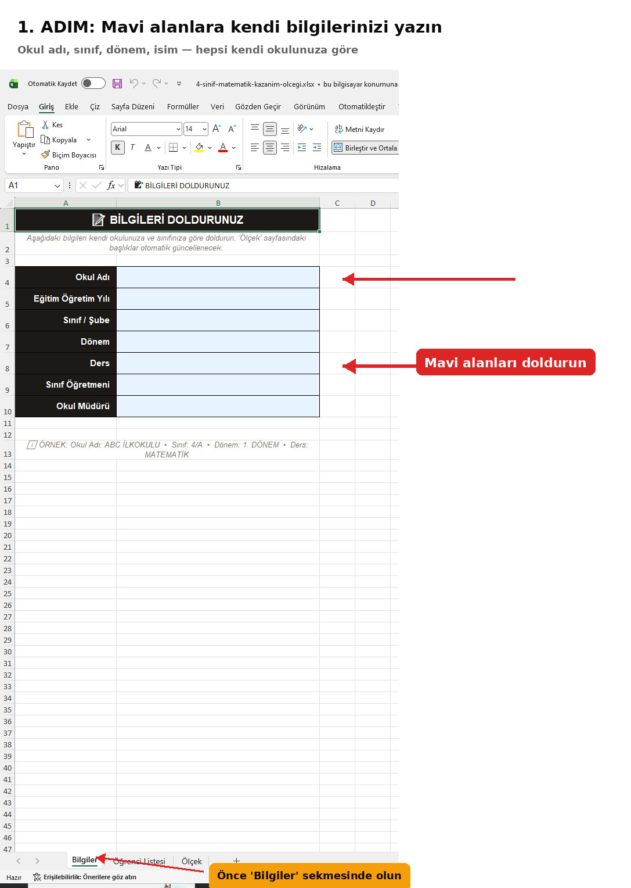
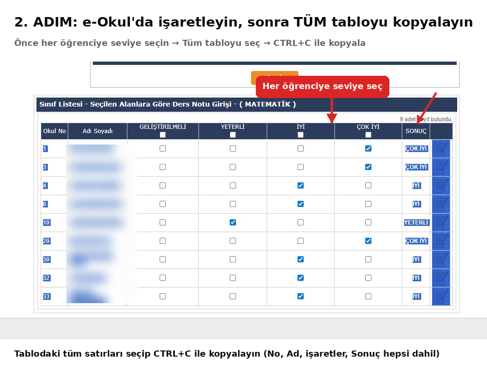
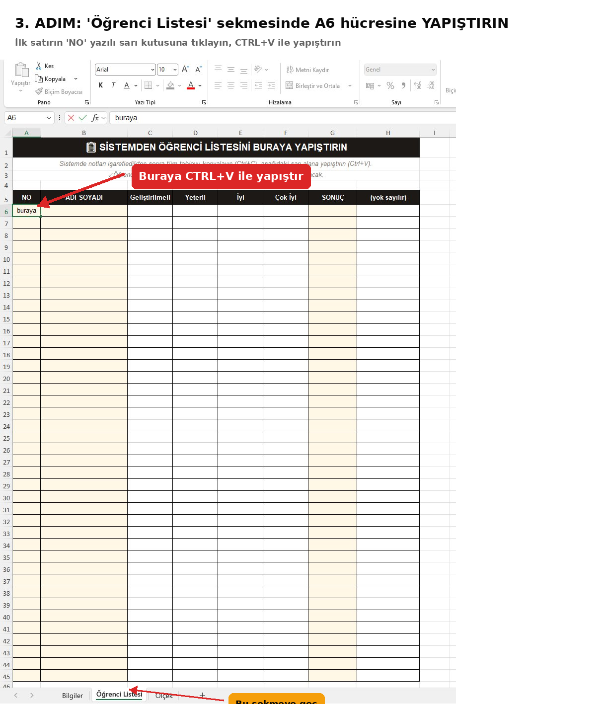

Şablonlar
Yükleniyor…
Yükleniyor…
Nasıl Kullanılır?
3 Adımda Kazanım Ölçeği
Excel'i indirin, aşağıdaki adımları izleyin.



Not: Excel her açıldığında veya F9 tuşuna basıldığında, kazanım puanları seviyeye göre rastgele yeniden dağıtılır.
Ortalama ve seviye otomatik hesaplanır. Yatay A4 tek sayfaya sığacak şekilde tasarlanmıştır.